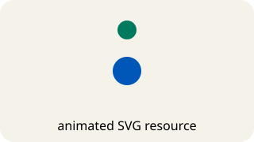

v152 · interactive demo
Playback Lab
Control an external animated SVG with the exact image-animation property.

code
image { image-animation: paused; }
image.style.imageAnimation = 'running';v152 · interactive demo
Control an external animated SVG with the exact image-animation property.

image { image-animation: paused; }
image.style.imageAnimation = 'running';